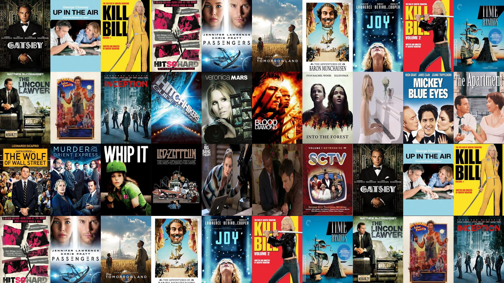

In this project we take raw housing data and transform
it in SQL Server to make it more usable for analysis.
We Analyze the dataset using SQL Server to identify zero or null values, duplicates, inconsistencies, and outliers.

In this project, I used datasets containing global data on Covid'19 , specifically related to deaths and vaccinations, and used SQL Server to explore the data and find interesting insights.

Tableau Dashboard on COVID'19 which can help users gain a holistic view of data, and analyze it from different perspectives.

Exploratory Data Analysis (EDA) and data cleaning of a movie dataset, and to analyze the dataset and uncover correlations between various attributes.
In this project we scrape data with Python involves using Python libraries to fetch data from Amazon websites, and then parsing and extracting the desired information.